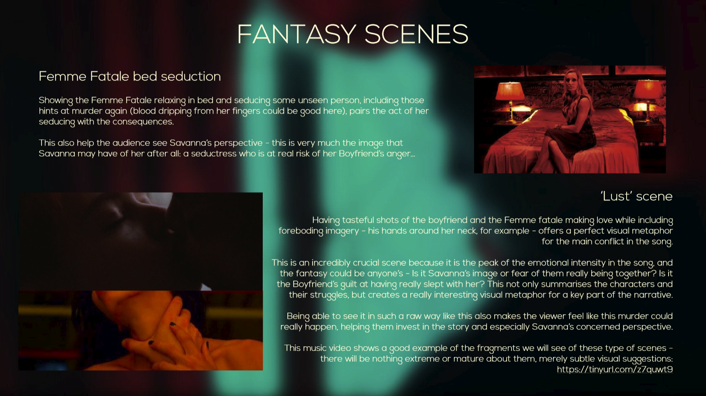
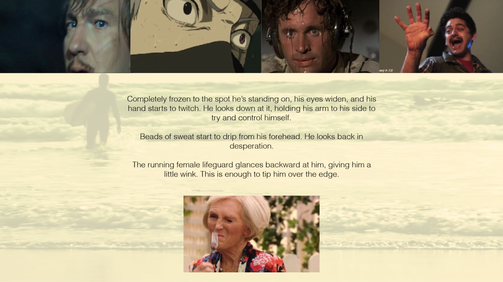
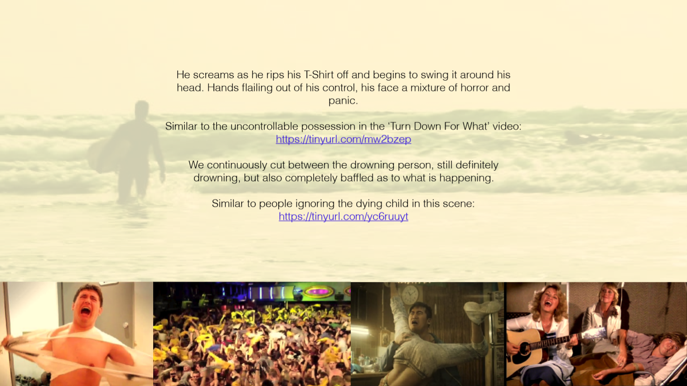
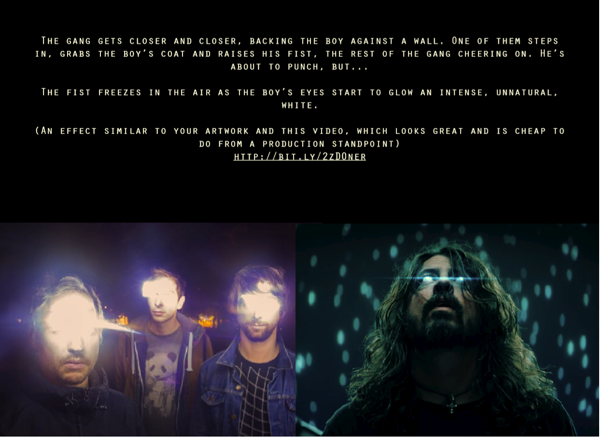
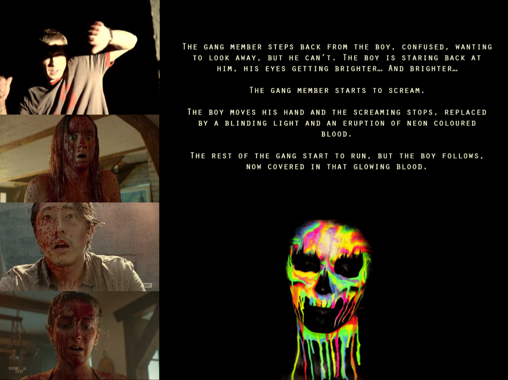
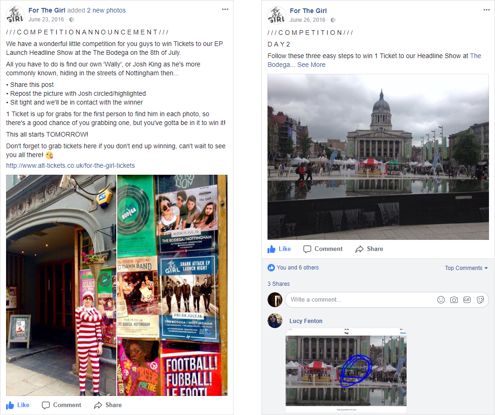
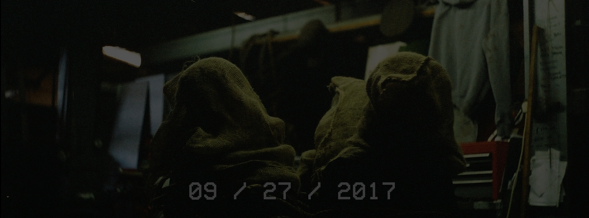
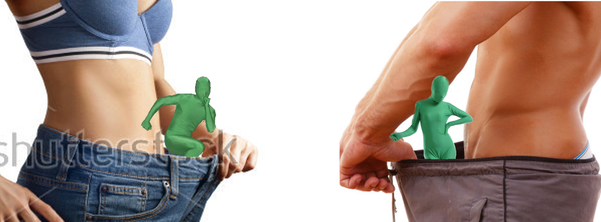
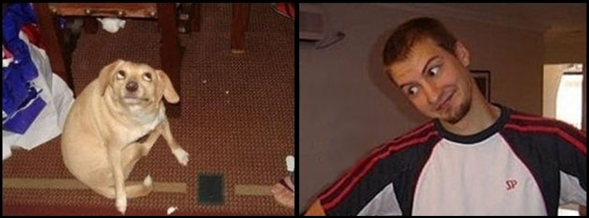
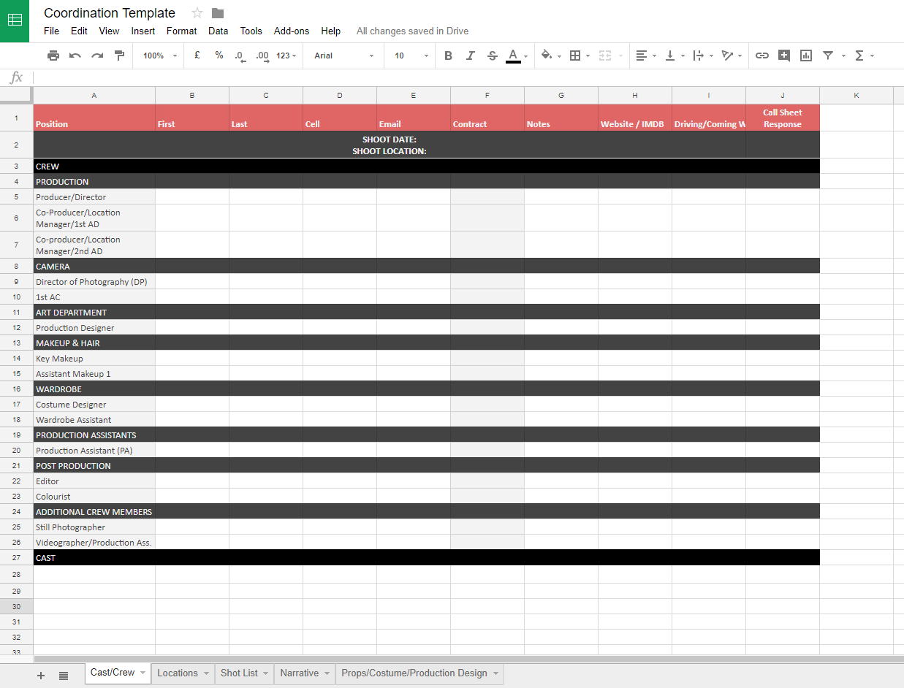

(Feel free to remember me after this interview as the overprepared nerdy one.)
I Pitch For Things
(Mostly film stuff, sometimes food)
Where Did Time Go? - Music Video
This video was a rare situation where a band wanted to be funny in their video, so we did a mild parody of the arty pretentious videos that were popular at the time. The video shows five artsy situations (one for each band member) and follows them as they slowly descend to chaos. Below is the treatment for one of these scenarios, and the actual video that we made.
Foxy’s Big Meal
A lot of rap music videos lately show the artist at an elaborate feast of beautiful food, dressed like a king and not even touching their meal. We think that’s an artsy pile of wank, so Foxy is going to bring a little bit of reality to the concept.
Set-up shots
Our opening shots of this section will show Foxy sat at a table for one, dressed in a suit and top hat as if ready for his first (only?) posh meal ever. The table will be decorated nicely, and the model, dressed as a waitress for these scenes, will pour wine into a glass that he holds out to her. He doesn’t look at her while he does this, regardless of how much he wants to.
We will have a couple of shots of Foxy sipping wine, laying his napkin over his lap, and generally preparing for his meal, which will lead us into the next section...
The next section - Starters and Main
In those rap videos, the table is laid out with glistening roast hog, bowls of fruit, and every kind of finger food you could imagine. However, Foxy is a man of the people, so he shall eat the food of the people -- Greasy takeaway presented in a slightly better way.
For the starter, he will be brought a silver platter of a McDonalds burger cut into cubes and served on toothpicks, because anything on a toothpick is classy. He will take a good look at the dish, eating it with his eyes, then will pick up one of the cubes and shove the whole thing in his mouth at once.
He’ll chew with appreciation.
For the main course he will be presented with a kebab and chips, unwrapped with all of the ingredients presented as nicely as possible (emphasis on ‘as possible). He will start eating it with a knife and fork like the civilised gent that he is, but then remove the napkin from his lap and start going at it with his hands, eating it sloppily (like the gent that he actually is).
Pudding - The big finale
For dessert the model will place a nice chocolate cake in front of Foxy then offer a cake slice to let him cut it neatly. Foxy will refuse.
The model will lean in and squirt just a little bit of whipped cream on top of the cake, but Foxy looks at her with disgust. He grabs the whipped cream from her hands and squirts tons of it onto the cake and into his own mouth before diving into his dessert like an animal. It gets everywhere, over his hands, his clothes, his face, and eventually he feels sick…
He leans forward and starts throwing up multi-coloured bubbles right into the dish.
Do Yourself A Favor - Music Video
This is a very recent project (currently in production) and below is a sample of how I pitch copy for individual scenes, and a slide from the final pitch presentation.
Femme Fatale bed seduction
The Femme Fatale will be in the bed she shared with the Boyfriend in the fantasy sex scene, but this time alone, being seductive and alluring. As before, there will be hints of murder, in this case with blood dripping from her fingers as she tries to draw an unseen person to her. Again, pairing her character with the idea of murder like this helps intensify the fear that it might really happen, but also help the audience see Savanna’s perspective - this is very much the image that Savanna may have of her after all: a seductress who is at real risk of her Boyfriend’s anger…
Alternative 1
This scene will show the Femme Fatale in bed, acting seductively and trying to draw some unseen person to her. There will be hints of murder here too, blood possibly dripping from her fingers as she gestures someone over, which ties together the cause and effect of her story: the Femme Fatale was seductive to the wrong person, and she is likely to suffer for it…
Alternative 2
Showing the Femme Fatale relaxing in bed and seducing some unseen person, including those hints at murder again (blood dripping from her fingers could be good here), pairs the act of her seducing with the consequences: murder.
Savanna performing to mirror - other characters appear in reflection
Savanna will be performing to a reflection of herself in the mirror, showing the emotion of the song. After a few moments, the Femme Fatale and the Boyfriend appear in that reflection too, watching her sing. This places Savanna in the middle of the conflict, showing how she is telling the story and sharing her view and fears through the lyrics of the song. It almost seems like she is thinking it all through herself too, trying to understand how all of this happened and what she should do next.
Alternative
In this shot, Savanna performs into a mirror, with the Femme Fatale and the boyfriend appearing behind her after a few moments. This puts her in the centre of the conflict, and displays visually that we are following Savanna’s perspective throughout the song.

A slide explaining a couple of key 'fantasy' scenes, which will have a different visual vibe.
T-Shirt Song - Music Video
These pitch presentations and the copy involved can vary drastically in terms of tone and content based on the band and idea. This is one that would have been beyond brilliant to make, but the band's management weren't looking to make anything for this song. See if you can figure out what it is about from the two slides below...


Zero Point One - Music Video
Sometimes the pitches are a little more surreal and darker, so the tone of the copy and the presentation itself shift a bit.


I Sometimes Write Scripts
(It keeps me off the streets)
I Am God, and Severely Underqualified - Short Film
This short is very airy, philosophical, and weird. It isn't for everyone, but it was an interesting challenge from a writing perspective. Fun fact number one: half of the dialogue in the script was actually written without the letter 'a' -- It was plot relevant, I'm not just showing off (I'm showing off a little though.) Fun fact two: the concept was inspired by Spaceballs. Yes, that Spaceballs.
He continues to type slower now, more hesitantly. His jaw tightens as a pain starts to grow in his skull.
SCREENPLAY (V.O.) (Cont.)
THE WRITER begins to question his own sanity as he tentatively takes the kettle off the heat. He returns to the desk, looking confused, nervous, and reluctant. There is a clear conflict in him, part of him wanting to stop but some strange compulsion to keep writing holds him in place.
He pauses, rubs his eyes.
He continues to type slower now, more hesitantly. His jaw tightens as a pain starts to grow in his skull.
SCREENPLAY (V.O.) (Cont.)
His hands continue to type, but not with the fluid confidence of before. Now, his movements are jerkier, more hesitant. He shuts his eyes and his jaw tightens, still typing as a dull throbbing pain grows in the centre of his skull. It quickly becomes a horrible aching. Aching. Aching. Aching. ---
THE WRITER stops typing suddenly when the ‘A’ key jams. The coat drags coins to the floor, the sound making THE WRITER jump and look back. After a moment, he turns back to his work and tries to press the key a few times with no success.
SCREENPLAY (V.O.) (Cont.)
Suddenly, the-
THE WRITER’S hand hovers over the now stuck ‘A’ key, as if realising that he can’t use that letter.
SCREENPLAY (V.O.) (Cont.)
-Key to the left of ‘S’ on the typewriter becomes firmly stuck. On the other side of the room, the tin of coins previously sitting still gets pulled to the ground, spilling out. THE WRITER jumps, turning to check it. He fixes his eyes on it, thinking, before turning to resume writing. THE WRITER tries to press the stuck key numerous times, with no success. He persists in typing, but he begins to look frightened, his fingers still moving fitfully over the typewriter, seemingly out of his control.
Muscles tense as this inner fear grows and grows. After a few moments, a stack of books fall, the top one shutting hard.
SCREENPLAY (V.O.) (Cont.)
His eyes move quickly between the words on the sheet, showing his inner turmoil. Books tumble to the floor by the desk, shutting the top one loudly. He seems flustered by this, suddenly very conscious of the concept of endings, of stopping, of the people in such ended stories. He looks to his former successes sorrowfully now, wondering whether his purpose in the world is truly done. His muscles tense. He feels truly powerless in deciding his next movements himself: stop typing, succumb, or continue typing endlessly?
I Touched My Shelf - Collab Short Film
This was a collaborative project set-up by me and a friend where four writers and four directors made a quarter of an overall story exploring one theme in pairs. The idea here was that books are drugs in this world, and it was a lot of fun to write. Sadly, I have two unfortunate facts though: this one died in pre-production, and, most sad of all, that title was only my temporary placeholder name - the other writers weren't so behind it...
Another few moments and that nervous look becomes sad resignation and understanding, signalled with a slight nod.
He reaches down to the book, not opening it fully as his fingers find a page. He rips it out slowly, deliberately, looking up at THE LIBRARIAN the whole time.
Bitterness creeps onto JACK’s face, along with the awareness of what he is being asked and how demeaning it is.
Eyes not moving from THE LIBRARIAN, he tears the page in half, crumpling one half into a tight ball and raising it to his mouth.
He chews with uncomfortable motions.
He swallows, balls the other half.
Chews.
The bitterness and shame melts away, the chewing looking easier and more natural.
The room becomes more surreal as his senses get more sensitive; colours dance in the air, he hears his fingers scrape and crunch the paper, and the sound of an insect across the room feels like a marching band beside his head.
He swallows again; it looks painful, but he quickly tears and balls another page and starts chewing that too, faster now.
He chews, and chews, then swallows yet again.
He rips another page, tears it down and chews it up.
His movements get faster, insect getting louder, colours more intrusive.
Pulling, and tearing, and chewing.
The world is bright and nice through his eyes but he looks desperate in reality, sad, and a bit weird.
THE LIBRARIAN backs away in the background, watching.
THE MAN seems possessed, ripping into the pages, desperate to eat, desperate for that higher high.
More and more.
Chew, and swallow.
The colours flood his vision, the noises sounding harsher and angrier, the insect moving becomes a painful thumping in his head, an unsettling whispering (no recognisable words) can be heard.
THE MAN feels it, that pain, but it only slows his feast, doesn’t stop it.
Sweat builds on his head, bending forward, cheeks flushing as he chews and swallows.
A hand on his stomach, one final swallow, eyes widening as he realises what’s about to happen.
He convulses forwards once, puts his other hand on the floor for support.
A pause, sweat drips from his forehead to the book.
He retches again, then a third time.
And he throws up violently: a flurry of small pieces of paper flying out of his mouth and to the floor. This resets his hypersensitivity and the surreal nature of the room, returning him to the drab coldness of reality.
I Have Ideas
(And only some of them are about cats)
This section is a little less structured, and contains broader ideas from my notebooks/brain that we can chat about if the title/teaser catches your fancy, as well as some other stuff that you might be interested in! Or not, I won't tell you how to live.
Where's Joshy - Social Media
During a brief four month period of band management, I helped to orchestrate a bunch of things. These included a PR campaign with the the harmonica player from Karma Chameleon, commissioning a new logo, photoshoots, and social media events like the below to give a little more interaction with the audience.

Social Blackout - Social Media
During the production of a music video showing a band being kidnapped by a doppelganger, I pushed for an interesting social media campaign in which the band's accounts were 'blacked out'. They would change their cover photo and band image to dark, cryptic pictures, and would gradually make them more obviously kidnapping photos as the release date approached. They could have also posted ransom note type posts, all to build hype for the single and video. Alas, it wasn't meant to be. Their manager was not happy about it first of all, and then the band broke up just before they released the video. That second one was probably the bigger issue...

Heartbeats - Concept
This could be a narrative piece or a music video if the right song came along, and I won't reveal too many details here. Essentially, it's a heart-warming teen romance thing with a healthy stylistic twist, and a dark comedy ending!
Green Man - Concept
Just in case you thought that I was holding back some of the weirder ideas from you (or if you were starting to think I was okay at Photoshop) I thought I'd put this one in here. This is a pretty surreal concept where we follow a few 80s style porn scenes but, when it reaches a point where undressing would usually occur, a small green person in a bodysuit jumps out of their trousers and causes chaos. This would either be a music video, or some kind of progressive contraceptive advert...

Animal Bond Sci-Fi - Concept
This concept is still in very early stages, so a lot can change before I develop it into an actual thing. While it's Sci-Fi right now, I don't imagine it will get any more Sci-Fi than Black Mirror -- a sort of dark, otherness where it is obviously fantasy but unsettlingly relatable. In this one, humans have discovered or engineered a pet that allows them to experience all emotion by proxy through it. Want to enjoy the chemical pleasure of chocolate without the risk of diabetes or weight gain? Feed the pet! Want to enjoy the thrill of being drunk without later dehydration and hangovers? Your pet can have those! Want to dabble in something heavier? Well, guess what...?

One Thing You Can't Replace - Concept
Another vague concept which I haven'd picked a form for just yet. This one would follow a very trendy, happy girl who lives in a shed in the forest -- a well decorated shed, mind -- who ventures into a nearby city, befriends people, and robs them of family photos for a shrine in her home so that she can seek a life she doesn't have. Stylistically I imagine it to be similar to The End of the F***ing World, but nothing is set in stone.
And Many More!
Those were a very small random selection of ideas from my notebook, but I have many, many more! Feel free to ask me about Cotard Delusion, Animal Sex Taxonomy, Dorian Gray meets Faustus, 'Routine' (a found footage idea), a sad side to superpowers, my white whale of a concept (three videos), the misguided time traveller, OR feel free to just chat and develop an idea with me organically because that is one of my favourite things to do!
Production Coordination, or 'I like Spreadsheets' - Misc.
As I started these film projects in a broadly stressful part of my life, and by the nature of the industry, it quickly became clear that organisation would make or break a production. This spreadsheet was put together and is adapted based on the project, including more tabs and boxes depending on the needs of the shoot. The great thing about Google Sheets is that we can share it with every member of the cast and crew and they can update it, check it for details they need, keep track of budgets, and it becomes a sort of living callsheet. Google advertisements aside, I quickly made this blank one for your viewing pleasure, so I would be happy to show you more about it if you want to see it.

This Website - Misc.
Another handful of my writing for you to have a look at if you so wish is all over this website! I actually learned to code earlier this (last?) year and I found a lot of creative pleasure in it, but I wanted a place to host articles I write and things I made, so I got to work on this very website. My articles are all fairly nerdy, generally based on psychology and tech, but you can also learn about how to make angel wings or etymology too. The things that I have made contain a broader range, from cross-stitch designs, a bunch of video projects, and even a couple of small coding things!